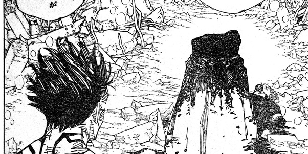

Vitimas feitas por Ryomen Sukuna
| Vitimas | Nomes | Forma da morte | Pessoas | Yorozu | Yorozu morreu pelo general Mahoraga em meio a luta dela contra Sukuna depois de ter sua expançaõ de dominio quebrada assim morrendo pois já estava muito ferida por conta de ferimentos sofridos durante a batalha |
|---|---|---|---|---|
| Tsumiki Fushiguro | Depois que Yorozu roubou o corpo de Tsumiki, ela desafiou Sukuna em uma luta até a morte, resultando na morte dela e de Tsumiki.a | |||
| Satoru Gojo | Durante uma luta ardua contra Sukuna, Gojo por uma momento enquanto estava frente a frente com Sukuna recebe um desmantelar que o corta ao meio, desmantelar esse que foi aplicado diretamente no interior de Satoru Gojo (por isso de o infinito não tem impedido sua morte) |  | ||
| Hajime | Sua morte não foi propriamente dita mais o fandom inteiro especula sua morte que ocorreu em uma luta até a morte contra Sukuna | |||
| Hiromi Higuruma | Durante uma luta ardua contra Sukuna já em sua forma verdadeira Higuruma é atingido em cheio por um desmantelar | |||
| Total de exatas - 15 (Contadas) Vitimas |
||||